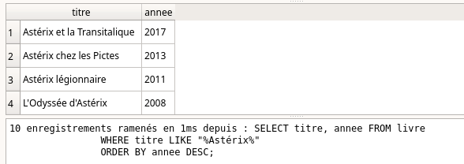
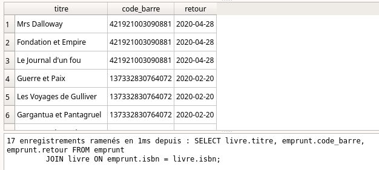
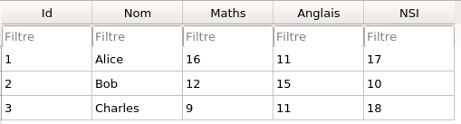

Langage SQL⚓︎
0. Du modèle relationnel au SGBD⚓︎
Les considérations sur le modèle relationnel du cours précédent traitaient plutôt de la structure mathématique des données.
Il s'agissait de déterminer la meilleure structure pour représenter les données et les relations qui les lient.
Il convient maintenant d'aborder la partie logicielle : les SGBD (Systèmes de Gestion de Bases de Données).
Les SGBD jouent le rôle d'interface entre l'être humain et la base de données. Par l'intermédiaire de requêtes, l'utilisateur va consulter ou modifier la base de données. Le SGBD est garant de l'intégrité de cette base, et prévient notamment que les modifications (souvent appelées transactions) ne soient pas préjudiciables à la base de données.
Le langage utilisé pour communiquer avec le SGBD est le langage SQL, pour Structured Query Langage (pour langage de requêtes structurées).
Les SGBD les plus utilisés sont basés sur le modèle relationnel. Parmi eux, citons Oracle, MySQL, Microsoft SQL Server, PostgreSQL, Microsoft Access, SQLite, MariaDB...
Mais de plus en plus de SGBD non-relationnels sont utilisés, spécialement adaptés à des données plus diverses et moins structurées. On les retrouve sous l'appelation NoSQL (pour Not only SQL). Citons parmi eux MongoDB, Cassandra (Facebook), BigTable (Google)...
La quasi-totalité de ces SGBD fonctionnent avec un modèle client-serveur.
Nous allons travailler principalement avec le langage SQLite peut lui s'utiliser directement sans démarrer un serveur : la base de données est entièrement représentée dans le logiciel utilisant SQLite (dans notre cas, DB Browser for SQLite).
Sa simplicité d'utilisation en fera notre choix pour illustrer cette présentation du langage SQL.
1. Introduction au langage SQL⚓︎
Dans toute la suite, nous allons travailler avec la base de données livres.db qui provient de l'ouvrage paru chez Ellipses, cité en bibliographie.
1.0 Mise en œuvre⚓︎
Pré-requis :
- Télécharger la base de données livres.db.
- Disposer d'un moyen agir sur la base de données à partir de requêtes SQL, soit en ligne soit en utilisant un logiciel externe.
- Rendez vous sur https://sqliteonline.com/
- Par File / OpenDB, ouvrez le fichier
livres.dbprécédemment téléchargé. - Écrivez votre requête plus cliquez sur Run.

- Installez
DB Browser for SQLite, téléchargeable à l'adresse https://sqlitebrowser.org/ - Ouvrez le fichier
livres.db.
Dans toute la suite, les manipulations sont à faire en interrogeant la base de données livres.db, avec l'une des méthodes indiquées ci-dessus.
Voici le diagramme relationnel de cette base :

- les clés primaires sont en bleu (suivi d'une icone de clé)
- les clés étrangères sont en noir et reliées à leur clé primaire.
1.1. Sélections⚓︎
Exemple 1 : écrire une requête basique avec SELECT et FROM 
- Commande :
SQL
SELECT titre FROM livre ; - Traduction :
On veut tous les titres de la table «livre».
- Résultat :

Remarques
-
Les mots-clés SQL sont traditionnellement écrits en MAJUSCULES.

-
Le
;signale la fin de l'instruction. Il peut donc être omis s'il n'y a pas d'instructions enchaînées (ce qui sera toujours notre cas). -
L'indentation n'est pas syntaxique (pas comme en Python). On peut faire des retours à la ligne et des indentations pour rendre le code plus lisible.
Exemple 2 : écrire une requête filtrée avec SELECT, FROM et WHERE
- Commande :
SQL
SELECT titre FROM livre WHERE annee >= 1990; - Traduction :
On veut les titres de la table «livre» qui sont parus après (ou en ) 1990;
- Résultat :

Le mot-clé WHERE doit être suivi d'un booléen. Les opérateurs classiques = , !=, >, >=, <, <= peuvent être utilisés, mais aussi le mot-clé IN :
Exemple 3 : écrire une requête avec plusieurs possibilités avec WHERE ... IN...
- Commande :
SQL
SELECT titre FROM livre WHERE annee IN (1990, 1991, 1992); - Traduction :
On veut les titres de la table «livre» qui sont parus en 1990, 1991 ou 1992.
- Résultat :

Exemple 4: écrire une requête avec booléens AND - OR
- Commande :
SQL
SELECT titre FROM livre WHERE annee >= 1970 AND annee <= 1980 AND editeur = 'Dargaud'; - Traduction :
On veut les titres de la table «livre» qui sont parus entre 1970 et 1980 chez l'éditeur Dargaud;
- Résultat :

Exemple 5 : écrire une requête approchée avec LIKE
- Commande :
SQL
SELECT titre FROM livre WHERE titre LIKE '%Astérix%'; - Traduction :
On veut les titres de la table «livre» dont le titre contient la chaîne de caractères "Astérix".
Le symbole % est un joker qui peut symboliser n'importe quelle chaîne de caractères.
- Résultat :
Exemple 6 : sélectionner plusieurs colonnes
- Commande :
SQL
SELECT titre, isbn FROM livre WHERE annee >= 1990; - Traduction :
On veut les titres et les ISBN de la table «livre» qui sont parus après 1990.
- Résultat :

Exemple 7 : sélectionner toutes les colonnes avec *
- Commande :
SQL
SELECT * FROM livre WHERE annee >= 1990; - Traduction :
On veut toutes les colonnes disponibles de la table «livre» pour les livres qui sont parus après 1990.
L'astérisque * est un joker (wildcard en anglais).
- Résultat :

Exemple 8 : renommer les colonnes avec AS
- Commande :
SQL
SELECT titre AS titre_du_livre FROM livre WHERE annee >= 1990; - Traduction :
Lors de l'affichage du résulats et dans la suite de la requête (important), la colonne "titre" est renommée "titre_du_livre".
- Résultat :
Remarque
L'alias AS sera souvent utilisé pour raccourcir un nom, notamment lors des jointures de plusieurs tables (voir plus loin).
1.2. Agrégations⚓︎
- Les requêtes effectuées jusqu'ici ont juste sélectionné des données grâce à différents filtres : aucune action n'a été effectuée à partir de ces données. Nous allons maintenant effectuer des opérations à partir des données sélectionnées.
- On appelle ces opérations des opérations d'agrégation.
Exemple 9 : compter avec COUNT
- Commande :
SQL
SELECT COUNT(*) AS total FROM livre WHERE titre LIKE "%Astérix%"; - Traduction :
On veut compter le nombre d'enregistrements de la tables livres comportant le mot "Astérix". Le résultat sera le seul élément d'une colonne nommée «total».
- Résultat :
Exemple 10 : additionner avec SUM
- Commande :
SQL
SELECT SUM(annee) AS somme FROM livre WHERE titre LIKE "%Astérix%"; - Traduction :
On veut additionner les années des livres de la tables livres comportant le mot "Astérix". Le résultat sera le seul élément d'une colonne nommée «somme». Attention : dans notre cas précis, ce calcul n'a aucun sens...
- Résultat :
Exemple 11 : faire une moyenne avec AVG
- Commande :
SQL
SELECT AVG(annee) AS moyenne FROM livre WHERE titre LIKE "%Astérix%"; - Traduction :
On veut calculer la moyenne des années de parution des livres de la table livres comportant le mot "Astérix". Le résultat sera le seul élément d'une colonne nommée «moyenne».
Attention : là encore, ce calcul n'a aucun sens...
- Résultat :
Exemple 12 : trouver les extremums avec MIN, MAX
- Commande :
SQL
SELECT MIN(annee) AS minimum FROM livre WHERE titre LIKE "%Astérix%"; - Traduction :
On veut trouver la plus petite valeur de la colonne «annee» parmi les livres de la tables livre comportant le mot "Astérix". Le résultat sera le seul élément d'une colonne nommée minimum. Le fonctionnement est identique avec MAX pour la recherche du maximum.
- Résultat :

Exemple 13 : ordonner des valeurs avec ORDER BY, ASC, DESC, LIMIT
-
Commande :
SQLSELECT titre, annee FROM livre WHERE titre LIKE "%Astérix%" ORDER BY annee DESC; -
Traduction :
On veut afficher tous les albums d'Astérix, et leur année de parution, classés par année décroissante.
- Résultat :

-
Comportement par défaut : Si le paramètre
ASCouDESCest omis, le classement se fait par ordre croissant (ASCest le paramètre par défaut). -
Utilisation de
LIMIT: Le mot-cléLIMIT(suivi d'un nombre) permet de limiter le nombre de résultats affichés.
Ainsi la requête
SQLpermet d'obtenir les renseignements sur l'Astérix le plus récent.SELECT titre, annee FROM livre WHERE titre LIKE "%Astérix%" ORDER BY annee DESC LIMIT 1;
Exemple 14 : éviter les doublons avec DISTINCT
- Commande :
SQL
SELECT DISTINCT editeur FROM livre; - Traduction :
On veut la liste de tous les éditeurs. Sans le mot-clé DISTINCT, beaucoup de doublons apparaîtraient.
- Résultat :
1.3 Jointures⚓︎
Observons le contenu de la table «emprunt» :
SELECT * FROM emprunt;
Le contenu est peu lisible : qui a emprunté quel livre ?
Souvenons-nous du diagramme de la base de données.
Pour que la table «emprunt» soit lisible, il faudrait (dans un premier temps) que l'on affiche à la place de l'ISBN le titre de l'ouvrage. Or ce titre est disponible dans la table «livres». On va donc procéder à une jointure de ces deux tables.
Exemple 15 : jointure de 2 tables avec JOIN...ON
- Commande :
SQL
SELECT livre.titre, emprunt.code_barre, emprunt.retour FROM emprunt JOIN livre ON emprunt.isbn = livre.isbn; - Traduction : Comme plusieurs tables sont appelées, nous préfixons chaque colonne avec le nom de la table. Nous demandons ici l'affichage de la table «emprunt», mais où on aura remplacé l'ISBN (peu lisible) par le titre du livre.
L'expression
JOIN livre ON emprunt.isbn = livre.isbn
Il est donc très important de spécifier ce sur quoi les deux tables vont se retrouver (ici, l'ISBN)

- Résultat :

Le résultat précédent a permis d'améliorer la visibilité de la table «emprunt», mais il reste la colonne «code_barre» qui est peu lisible. Nous pouvons la remplacer par le titre du livre, en faisant une nouvelle jointure, en invitant maintenant les deux tables «livre» et «usager».
Exemple 16 : jointure de 3 tables
- Commande :
SQL
SELECT u.nom, u.prenom, l.titre, e.retour FROM emprunt AS e JOIN livre AS l ON e.isbn = l.isbn JOIN usager AS u ON e.code_barre = u.code_barre; -
Traduction : Il faut bien comprendre que la table principale qui nous intéresse ici est «emprunts», mais qu'on modifie les valeurs affichées en allant chercher des correspondances dans deux autres tables. Notez ici que des alias sont donnés aux tables (par AS) afin de faciliter l'écriture.
-
Résultat :

2. Création et modification d'une base de données⚓︎
2.1 Création⚓︎
L'objectif est de créer la table suivante :
| id | Nom | Maths | Anglais | NSI |
|---|---|---|---|---|
| 1 | Alice | 16 | 11 | 17 |
| 2 | Bob | 12 | 15 | 10 |
| 3 | Charles | 9 | 11 | 18 |
La création d'une table n'est pas explicitement au programme de NSI. Personne ne sait vraiment pourquoi
Exemple 17 : création d'une table avec CREATE TABLE
- Commande :
SQL
CREATE TABLE Table_notes ( Id INTEGER PRIMARY KEY, Nom TEXT, Maths INTEGER, Anglais INTEGER, NSI INTEGER ); -
Remarque :
C'est l'utilisateur qui spécifie, éventuellement, quel attribut sera une clé primaire. -
Résultat :
Dans DB Browser, il faut avoir au préalable créé une nouvelle base de données.
2.2 Modification⚓︎
Par contre, la modification d'une base de données est au programme.
rappel :
Exemple 18 : insertion de valeurs avec INSERT INTO... VALUES
-
Commande :
SQLINSERT INTO Table_notes VALUES (1, 'Alice', 16, 11, 17), (2, 'Bob', 12, 15, 10), (3, 'Charles', 9, 11, 18); -
Résultat :

Intérêt de la clé primaire⚓︎
Essayons d'insérer un 4ème enregistrement ayant le même id qu'un autre élève.
-
Commande :
SQLINSERT INTO Table_notes VALUES (3, 'Denis', 18, 10, 12); -
Résultat :
La contrainte de relation est violée : le SGBD «protège» la base de données en n'acceptant pas la proposition d'insertion. La base de données n'est pas modifiée. -
Remarque : Il est possible de «déléguer» la gestion des valeurs de la clé primaire avec l'instruction
AUTOINCREMENT. La déclaration de la table et l'insertion des valeurs serait :SQLet le résultat serait :CREATE TABLE Table_notes ( Id INTEGER PRIMARY KEY AUTOINCREMENT, Nom TEXT, Maths INTEGER, Anglais INTEGER, NSI INTEGER ); INSERT INTO Table_notes (Nom, Maths, Anglais, NSI) VALUES ('Alice', 16, 11, 17), ('Bob', 12, 15, 10), ('Charles', 9, 11, 18);

L'attribut id est donc géré automatiquement par le SGBD.
Exemple 19 : modifier une valeur avec UPDATE, SET
Pour modifier la note de Maths d'Alice :
- Commande :
SQL
UPDATE Table_notes SET Maths = 18 WHERE Nom = 'Alice';
2.3 Suppressions⚓︎
Exemple 20 : supprimer un enregistrement avec DELETE
Pour supprimer totalement la ligne concernant Charles :
-
Commande :
SQLDELETE FROM Table_notes WHERE Nom = 'Charles'; -
Contrainte de référence : si une autre table contient par exemple l'attribut
idcomme clé étrangère, et si l'idde Charles fait partie de cette table, le SGBD refusera de supprimer cette ligne, afin de ne pas violer la contrainte de référence.
Exemple 21 : suppression totale d'une table avec DROP TABLE
Pour supprimer totalement et défitivement la table :
-
Commande :
SQLDROP TABLE Table_notes; -
Contrainte de référence : là encore, si une autre table est reliée à
Table_notespar une clé étrangère, la suppression sera bloquée par le SGBD.